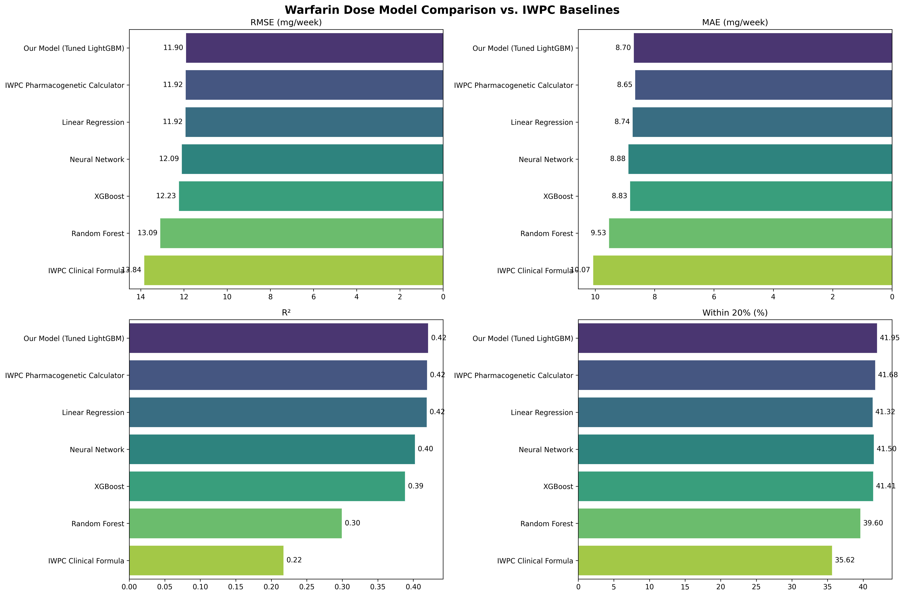
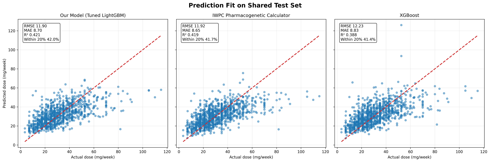
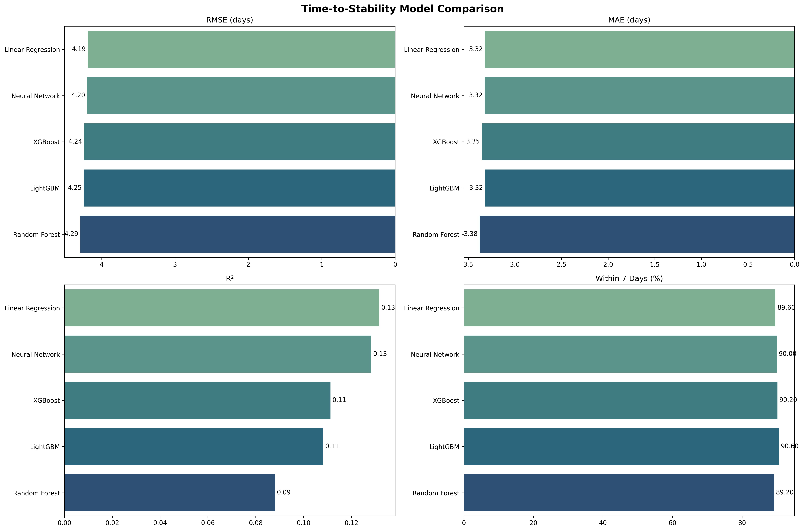
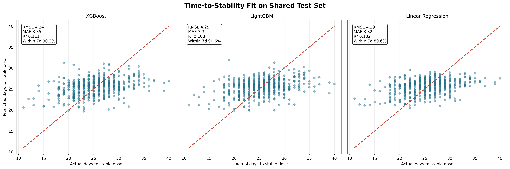
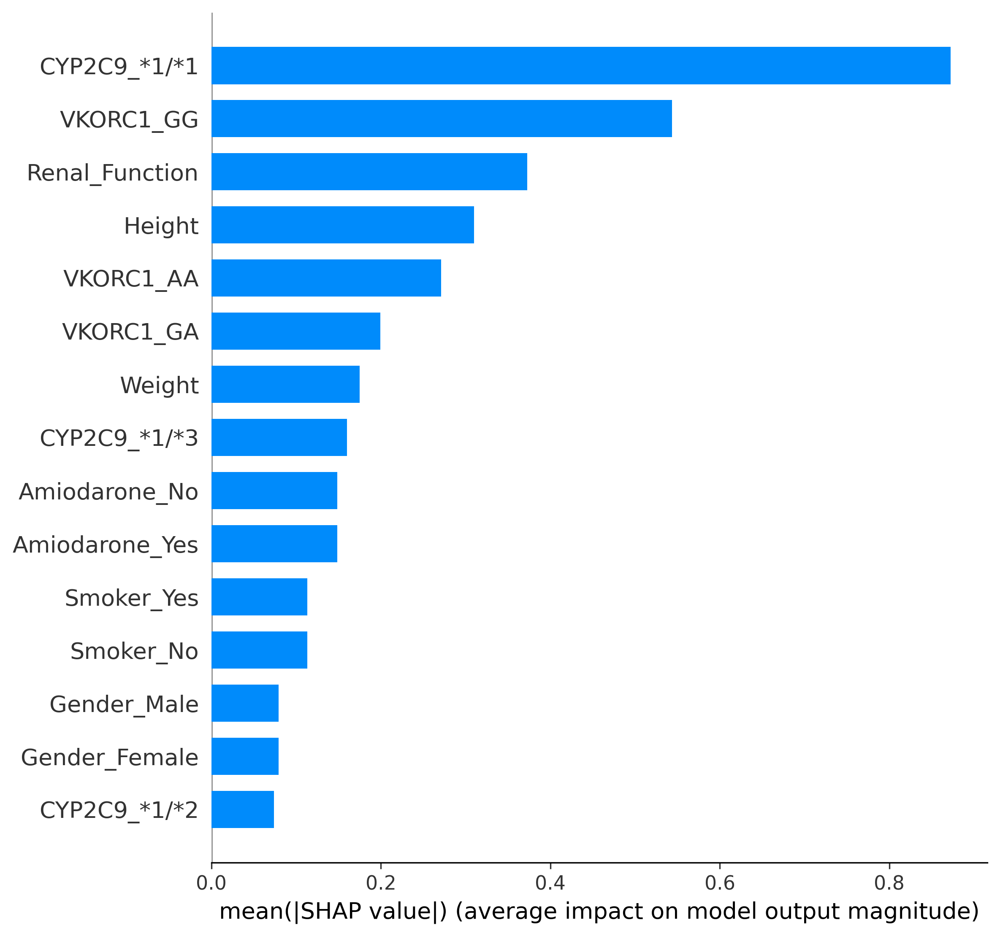
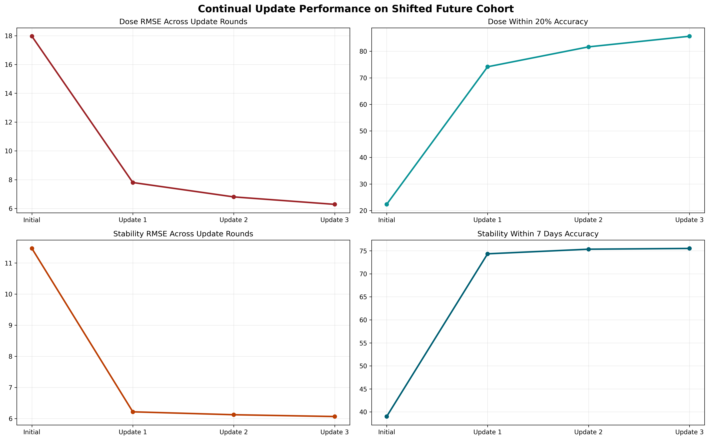
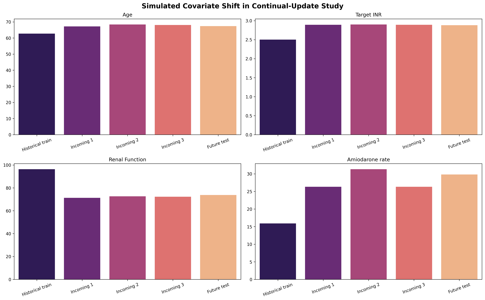
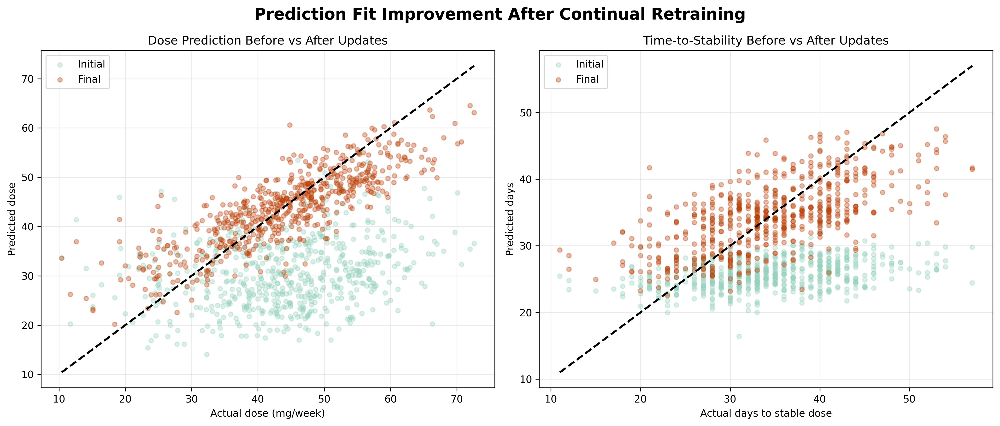

This deck consolidates the full workstream: benchmarking dose prediction against the IWPC calculator, building a time-to-stability model, and evaluating continual retraining on new shifted data.
Best model edges the IWPC pharmacogenetic calculator on RMSE while keeping clinically plausible drivers.
Current synthetic target behaves nearly linearly, so simpler models remain competitive.
Retraining on shifted incoming batches materially recovers performance on future cohorts.
RMSE 11.90 mg/week, MAE 8.70, R² 0.421.
IWPC PGx comparator: RMSE 11.92, MAE 8.65.
| rank | model | rmse | mae | r2 | within 20 pct |
|---|---|---|---|---|---|
| 1 | Our Model (Tuned LightGBM) | 11.9034 | 8.7012 | 0.4209 | 41.9530 |
| 2 | IWPC Pharmacogenetic Calculator | 11.9198 | 8.6526 | 0.4193 | 41.6817 |
| 3 | Linear Regression | 11.9238 | 8.7364 | 0.4190 | 41.3201 |
| 4 | Neural Network | 12.0937 | 8.8810 | 0.4023 | 41.5009 |
| 5 | XGBoost | 12.2332 | 8.8270 | 0.3884 | 41.4105 |
| 6 | Random Forest | 13.0928 | 9.5326 | 0.2994 | 39.6022 |
| 7 | IWPC Clinical Formula | 13.8394 | 10.0696 | 0.2173 | 35.6239 |


RMSE 4.19 days, MAE 3.32, within 7 days 89.6%.
The top four models are separated by only about 0.06 RMSE days, so there is no strong case for extra complexity on this synthetic target.
| rank | model | rmse | mae | r2 | within 7 days pct |
|---|---|---|---|---|---|
| 1 | Linear Regression | 4.1890 | 3.3222 | 0.1317 | 89.6000 |
| 2 | Neural Network | 4.1973 | 3.3245 | 0.1283 | 90.0000 |
| 3 | XGBoost | 4.2381 | 3.3537 | 0.1112 | 90.2000 |
| 4 | LightGBM | 4.2452 | 3.3213 | 0.1083 | 90.6000 |
| 5 | Random Forest | 4.2930 | 3.3777 | 0.0881 | 89.2000 |



RMSE: 17.96 → 6.29
Within 20%: 22.3% → 85.7%
RMSE: 11.47 → 6.06
Within 7 days: 39.0% → 75.5%
Experiment design: historical training cohort plus three shifted incoming batches, all measured on one fixed shifted future test cohort.
| round | train size | dose rmse | dose within 20 pct | stability rmse | stability within 7 days pct |
|---|---|---|---|---|---|
| Initial | 2500 | 17.9595 | 22.3333 | 11.4675 | 39.0000 |
| Update 1 | 2800 | 7.8012 | 74.1667 | 6.2159 | 74.3333 |
| Update 2 | 3100 | 6.8023 | 81.6667 | 6.1223 | 75.3333 |
| Update 3 | 3400 | 6.2852 | 85.6667 | 6.0645 | 75.5000 |



Use the tuned LightGBM dose model when the objective is best predictive accuracy against IWPC-style baselines.
Use the linear stability model unless a richer real-world target is available; current synthetic behavior does not justify a more complex learner.
Schedule cumulative retraining when incoming patients diverge from the original cohort. The simulated shift study shows large accuracy recovery after updates.